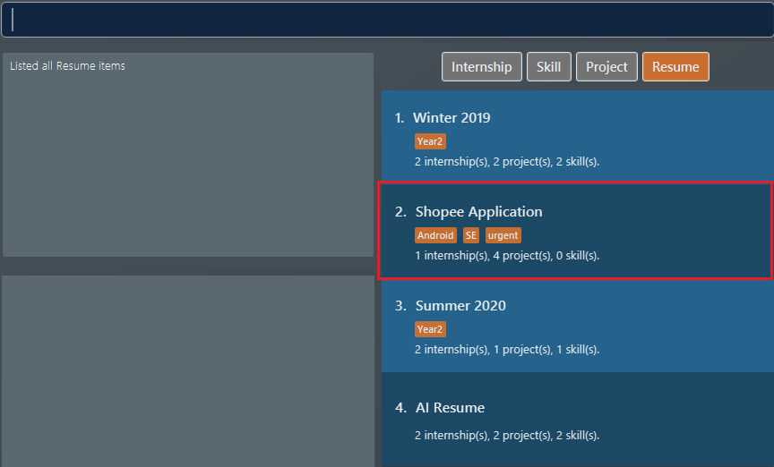

Overview
AddressBook - Level 3 is a desktop address book application used for teaching Software Engineering principles. The user interacts with it using a CLI, and it has a GUI created with JavaFX. It is written in Java, and has about 10 kLoC.
Summary of contributions
-
Major enhancement: added the ability to undo/redo previous commands
-
What it does: allows the user to undo all previous commands one at a time. Preceding undo commands can be reversed by using the redo command.
-
Justification: This feature improves the product significantly because a user can make mistakes in commands and the app should provide a convenient way to rectify them.
-
Highlights: This enhancement affects existing commands and commands to be added in future. It required an in-depth analysis of design alternatives. The implementation too was challenging as it required changes to existing commands.
-
Credits: {mention here if you reused any code/ideas from elsewhere or if a third-party library is heavily used in the feature so that a reader can make a more accurate judgement of how much effort went into the feature}
-
-
Minor enhancement: added a history command that allows the user to navigate to previous commands using up/down keys.
-
Code contributed: [Functional code] [Test code] {give links to collated code files}
-
Other contributions:
-
Project management:
-
Managed releases
v1.3-v1.5rc(3 releases) on GitHub
-
-
Enhancements to existing features:
-
Documentation:
-
Did cosmetic tweaks to existing contents of the User Guide: #14
-
-
Community:
-
Tools:
-
Integrated a third party library (Natty) to the project (#42)
-
Integrated a new Github plugin (CircleCI) to the team repo
-
-
{you can add/remove categories in the list above}
Contributions to the User Guide
Given below are sections I contributed to the User Guide. They showcase my ability to write documentation targeting end-users. |
Deleting an item : delete
Deletes an existing item from the ResuMe application.
Format: delete INDEX i/ TYPE
|
Use list command to navigate to the correct list to ensure that 1) the item exists, and 2) you know the
correct index for deletion. Or just fall back on undo if you accidentally delete the wrong item.
|
Example:
-
Suppose we start with the following original list of
resumeitems, as seen using the commandlist i/ res. Pay attention to the secondresumeitem.Figure 1. List of all resume items -
We delete the 2nd
resumewithdelete 2 i/ res. Figure 2. Application view after deleting the resume item at index 2
Figure 2. Application view after deleting the resume item at index 2 -
We delete the 3rd
skillwithdelete 3 i/ ski. Do note how it is not a must for the list box to displayskillitems for deletion to proceed. After the deletion the list box is set to showskillitems. Figure 3. Application view after deleting the skill item at index 3
Figure 3. Application view after deleting the skill item at index 3
Contributions to the Developer Guide
Given below are sections I contributed to the Developer Guide. They showcase my ability to write technical documentation and the technical depth of my contributions to the project. |
Undo/Redo feature
Implementation
The undo/redo mechanism is facilitated by VersionedResumeBook.
It extends ResumeBook with an undo/redo history, stored internally as an ResumeBookStateList and currentStatePointer.
Additionally, it implements the following operations:
-
VersionedResumeBook#commit()— Saves the current resume book state in its history. -
VersionedResumeBook#undo()— Restores the previous resume book state from its history. -
VersionedResumeBook#redo()— Restores a previously undone resume book state from its history.
These operations are exposed in the Model interface as Model#commitResumeBook(), Model#undoResumeBook() and Model#redoResumeBook() respectively.
Given below is an example usage scenario and how the undo/redo mechanism behaves at each step.
Step 1. The user launches the application for the first time. The VersionedResumeBook will be initialized with the initial resume book state, and the currentStatePointer pointing to that single resume book state.
Do note that all resume books begin with its display type set to an empty string. Display type of a resume book determines which item
list will be selected for display (e.g. if the display type is "res" - an alias for resume, then the list of all resumes will be selected).
Step 2. The user executes delete 5 i/ res command to delete the 5th resume in the resume book. The delete command calls Model#commitResumeBook(), causing the modified state of the resume book after the delete 5 i/ res command executes to be saved in the resumeBookStateList, and the currentStatePointer is shifted to the newly inserted resume book state.
In addition, the display type of the current resume book will be set to resume.

Step 3. The user executes add i/ int n/ RESUME Internship … to add a new internship. The add command also calls Model#commitResumeBook(), causing another modified resume book state to be saved into the resumeBookStateList. This resume
book has its display type set to int - which is an alias for internship.
If a command fails its execution, it will not call Model#commitResumeBook(), so the resume book state will not be saved into the resumeBookStateList.
|
Step 4. The user now decides that adding the internship was a mistake, and decides to undo that action by executing the undo command. The undo command will call Model#undoResumeBook(), which will shift the currentStatePointer once to the left, pointing it to the previous resume book state, and restores the resume book to that state.
This resume book state, however, does not has the display type that we want. Thus, VersionedResumeBook#setItemsToDisplay() will be called to set the current resume book’s
display type to that of the resume book state one to the right of the currentStatePointer - which corresponds to the command that just has been undone.
Note: resumeBookStateList stores resume book states as ReadOnlyResumeBook, thereby allowing these states to stay unmodified throughout
their life cycle. Operations like Model#commitResumeBook(), Model#undoResumeBook(), and VersionedResumeBook#setItemsToDisplay() will not
change any of these state at all. Immutable state like this is desirable because it gives rise to fewer bugs and fewer unexpected behaviours.

If the currentStatePointer is at index 0, pointing to the initial resume book state, then there are no previous resume book states to restore. The undo command uses Model#canUndoResumeBook() to check if this is the case. If so, it will return an error to the user rather than attempting to perform the undo.
|
The following sequence diagram shows how the undo operation works:

The lifeline for UndoCommand should end at the destroy marker (X) but due to a limitation of PlantUML, the lifeline reaches the end of diagram.
|
The redo command does the opposite — it calls Model#redoResumeBook(), which shifts the currentStatePointer once to the right, pointing to the previously undone state, and restores the resume book to that state.
If the currentStatePointer is at index resumeBookStateList.size() - 1, pointing to the latest resume book state, then there are no undone resume book states to restore. The redo command uses Model#canRedoResumeBook() to check if this is the case. If so, it will return an error to the user rather than attempting to perform the redo.
|
Step 5. The user then decides to execute the command list i/ ski. Commands that do not modify the resume book, such as list, will usually not call Model#commitResumeBook(), Model#undoResumeBook() or Model#redoResumeBook(). Thus, the resumeBookStateList remains unchanged.
Here we also see how the stored resume book states are immutable. list i/ ski causes the display type of the current resume book to switch to skill (whose alias is "ski"),
while the resume book state pointed to by the currentStatePointer still maintains its display type (which is resume).
Step 6. The user executes sort i/ ski order/ name, which calls Model#commitResumeBook(). Since the currentStatePointer is not pointing at the end of the resumeBookStateList, all resume book states after the currentStatePointer will be purged.
We designed it this way because it no longer makes sense to redo the add i/ int … command. This is the behavior that most modern desktop applications follow.
The following activity diagram summarizes what happens when a user executes a new command:

Design Considerations
Aspect: How undo & redo executes
-
Alternative 1 (current choice): Saves the entire resume book.
-
Pros: Easy to implement. Easy to understand.
-
Cons: May have performance issues in terms of memory usage.
-
-
Alternative 2: Individual command knows how to undo/redo by itself.
-
Pros: Will use less memory (e.g. for
delete, just save the item being deleted). -
Cons: We must ensure that the implementation of each individual command is correct. It is further complicated by the fact that there is an
add,delete,edit, andsortcommand for each item type. Also, Separation of Concerns Principle is violated as in essence, theundo()method of a command is doing more than what the command is responsible for, e.g. undoing adeletecommand is essentially performing anaddcommand.
-
Aspect: Data structure to support the undo/redo commands
-
Alternative 1 (current choice): Use a list to store the history of resume book states.
-
Pros: Very straightforward. Developers, even the novice ones, can easily understand and pick up if they wish to improve upon our application.
-
Cons: We need handle the
currentStatePointeraccurately; this is further complicated as we also need to reach to the undone resume book state to retrieve the correct display type for the current resume book.
-
-
Alternative 2: Use
HistoryManagerfor undo/redo.HistoryManagerwill contain two stacks:UndoStackandRedoStack. We push a command into the former stack when it is executed; when anundois performed, we pop the top of theUndoStackand store the command in theRedoStack.-
Pros: We do not need to maintain a separate list, and just reuse what is already in the codebase. We also just need to store the history of commands as opposed to the entire resume book.
-
Cons: Handling of the stacks can be confusing, especially since there are commands that make no change to the model and thus are not (and should not be) stored.
editanddeleterequire the old-versioned item to be stored as well so that it can be restored whileadddoes not, thereby affecting consistency.
-
[Proposed] Improvements for Undo/Redo
A new function can be added that allows users to navigate resume book states. This is very possible because we can already store all these states and can map them to keys easily. This new function can let user traverse between resumes without needing to undo or redo too many times.
A better data structure - like a search tree - can be used in place of a list. If the above proposed change is taken into consideration, then it is desirable to improve search time for a resume book state, from worst case linear to worst case logarithmic.
[Proposed] Data Encryption
Data encryption can be implemented in the future versions.
Aspect: How data encryption will be implemented
-
Alternative 1: Encrypt and store data locally.
-
Pros: Easy to implement. There are many existing encryption libraries that can be used.
-
Cons: Performance issues may arise because every call to save to storage requires encrypting a lot of data. Security threat is still present if we store the encryption key in the same machine.
-
-
Alternative 2: Store data outside the user’s machine and issue them access token.
-
Pros: Data is not bound to one machine and can be restored if the user forgets their credentials. If a DBMS is used then there are additional benefits to storage functionality as well.
-
Cons: We need to generate access tokens and check them. We also need to change the current implementation to work with external storage.
-
PROJECT: PowerPointLabs
{Optionally, you may include other projects in your portfolio.}